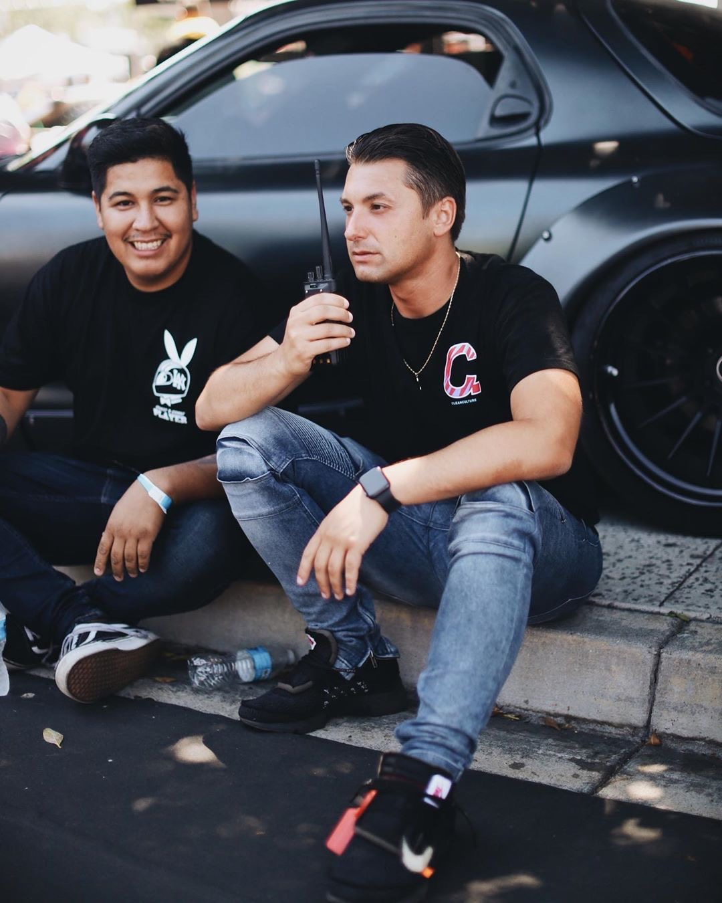

David Segura
About Me
My name is David Segura, and I am a 30-year-old creator, photographer, and social media manager with a passion for cars. I got my start in the automotive industry by taking up photography eight years ago and sharing my work on social media. As a social media manager, I develop strategies, create content, engage with followers, and track metrics for myself and my clients. Additionally, I am thrilled to share that I am currently pursuing software development at Code Fellows. I am incredibly excited about this new direction in my career and the opportunity to make a mark in the tech field. I believe that combining my creative skills and technical knowledge will allow me to bring a fresh perspective to software development projects. With my keen eye for photography and design, I have built a solid reputation and established relationships with companies in the automotive industry. This has led me to explore event coordination, where I have achieved success in bringing together car enthusiasts, vendors, and spectators for memorable shows. My attention to detail and organizational skills make me a valuable asset in planning and executing successful events. Driven by my passion for cars, my talent for photography and design, and my expertise in event coordination and social media management, I have become a unique and valuable figure in the automotive industry. I am dedicated to continuing my growth and development in these areas and to creating unforgettable experiences for car enthusiasts and spectators alike. My newfound pursuit of software development will undoubtedly complement my existing skill set and open up new avenues for innovation and creativity. Thank you for taking the time to learn more about me. I am enthusiastic about the future and the opportunities that lie ahead as I embark on this exciting journey in software development at Code Fellows.

Hobbies

My 5 Dream Cars
Contact
- Email:Dsegura07@yahoo.com
- Instagram: @carphysics_david
- Linkedin: David
- Phone:714.414.8061